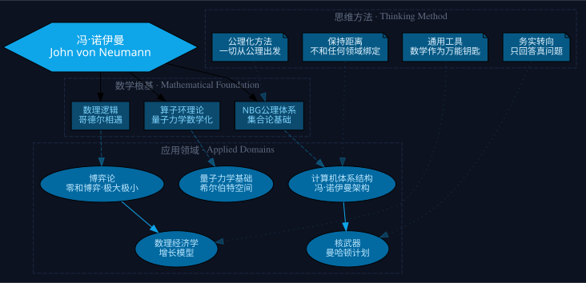

一个穿西服骑驴的犹太贵族，用数学撬开了量子力学、计算机、博弈论和原子弹的大门
他证明了思维可以被机器模拟——意识不是神圣的火花，而是一套可计算的操作
1903年，一个叫雅诺斯的犹太男孩出生在布达佩斯最繁华的商业街上。他父亲是银行家，刚被国王授予了贵族姓氏"冯"。他母亲那边的财富更夸张——连他爸爸都是入赘的。六岁之前，他已经有四门外语家教，拥有一个被父亲买下的私人图书馆，晚餐桌上讨论的是银行投资决策。六岁时，他能心算八位数乘法。
这个男孩就是约翰·冯·诺伊曼。他后来被公认为"地球上最聪明的人"——不是之一。量子力学奠基人维格纳在诺贝尔颁奖典礼上被问到为什么匈牙利培养了那么多天才时，他的回答是："不，只有冯·诺伊曼是天才。"
冯·诺伊曼让我看到了一种完全不同的人生可能。在我的印象里，科学家要么像陈景润一样沉迷研究不问世事，要么像谢尔顿一样怪异疯狂，要么像泡利一样浑身是刺难以相处。但冯·诺伊曼打破了这个模板：他智商和情商都极高，从不和人当面争执，该妥协时八面玲珑，该硬扛时寸步不让。他穿着西服在沙漠边缘骑驴，每年换一辆新凯迪拉克，周末在家开Party，两任太太都貌美如花。他证明了一件事：天才不一定是悲剧。
而我最想让你理解的，是他思维方式的三个核心原则：通用、务实、克制。通用——永远掌握在不同领域都能用的工具（数学）；务实——花时间回答真问题、满足真需求；克制——不过度深陷其中，也不过早抗拒机会。这三条原则让他在十多个领域都做出了诺奖级的成就，而且终生高产。
点击翻转
你今天用的每一台电脑、手机、服务器，底层都是冯·诺伊曼设计的存储程序结构。在他之前，换一个计算任务要重新接线。他加上了一个能存储20万个中间结果的单元——程序从此可以用软件来写。
点击翻转
1928年，他建立了零和博弈的极大极小值定理。1944年出版的600页《博弈论与经济行为》至今仍在印刷，被翻译成30多种语言。六位诺贝尔经济学奖得主公开承认受他影响。
点击翻转
20岁时，他加入了对第三次数学危机的攻克。他提出的NBG公理体系（N就是Neumann）至今是集合论最广泛使用的版本。博士答辩时，希尔伯特只问了一个问题："你的晚礼服是哪家裁缝做的？"
点击翻转
他本人评价最高的成就。他证明了海森堡的矩阵力学和薛定谔的波动力学在数学上是等价的——纠正了狄拉克不完整的证明。这本书等了20年才被翻译成英文。
点击翻转
他不仅是原子弹和氢弹的核心计算者，还是最激进的核主战派。"如果你问我为什么不明天就炸他们，我会问为什么不今天？如果是今天下午五点，我会问为什么不是一点？"
点击翻转
从集合论到博弈论，他的方法始终如一：列出公理，推导结论。经济学在他看来"还不如17世纪的物理学"——于是他直接为经济学建立了一套公理体系。
点击翻转
哥德尔不完备定理粉碎了冯·诺伊曼纯粹数学的梦想。他是全场唯一能当场听懂证明的人。回家验证后，他做出了一个决定：从此只做有用的事。从纯粹数学家变成了应用数学家。
点击翻转
ENIAC团队的核心工程师想申请专利，靠计算机发大财。冯·诺伊曼反手把全部设计思路公开出版——这份101页报告加速了计算机时代的到来。他放弃了史上最大的创富机会，因为他知道技术需要开放竞争。
面对任何混乱的问题域，第一步不是收集数据，而是列出基本假设（公理），然后推导结论。冯·诺伊曼用这同一套方法打通了集合论、量子力学、博弈论和计算机科学。当你发现自己在一个领域反复兜圈子时，问问自己：这个领域的基本公理是什么？
冯·诺伊曼和所有领域都保持着"暧昧的距离"——一个出色成果完成后就转身忙别的。他不会被任何单一领域的诱惑锁死。这种"游牧感"让他总能被最迫切的需求推着走，而那些迫切需求背后，往往就是最有价值的真问题。
冯·诺伊曼最擅长的就是把数学工具引入新领域。一个暑假读了几本经济学课本，他就发现了瓦尔拉斯一般均衡理论的错误，并修正了它。他的建议：与其在每个领域从头学起，不如精通一门"元工具"，用它在不同领域之间迁移。
1930年哥德尔不完备定理之后，冯·诺伊曼彻底抛弃了纯粹数学。他的判断：在人类有更好的方法之前，某些复杂系统就是泥潭，一脚陷进去就拔不出来。在有彻底解决方案之前，即便可以获得至高无上的声望，也不值得全身心投入。这是一种极其稀缺的认知纪律。

数学是他随身携带的瑞士军刀。不管进入哪个领域——量子力学、经济学、计算机——他做的第一件事就是用数学重新定义问题。因为数学是所有科学的共同语言，精通数学就等于拥有了一张万能通行证。
从纯理论转向应用数学后，他身兼12个机构的顾问。每个顾问职位背后都是一个"顶尖工程师都解决不了的难题"。这些真问题天然经过了筛选，解决一个就产生一个诺奖级的成果。
他最爱数学，但按家里要求拿下了化学学位。他发明了计算机体系结构但公开了全部设计。他建立了博弈论但写完书就转身去搞核武器。没有东西能诱惑他放弃所有其他选择。
冯·诺伊曼的这三条铁律来自一个更深层的特质：游牧感。历史上，犹太人长期颠沛流离；青年时代的战争动荡又加剧了这种特质。他没有"根据地"情结——不会因为在一个领域投资了十年就不舍得离开。
他说过一句话："如果有人不相信数学是简单的，那是因为他还没有意识到人生有多复杂。"
图灵提供了理论证明（图灵机），冯·诺伊曼设计了工程架构（存储程序）。巴贝奇1840年就造过机械计算机。最公平的说法：图灵是计算机之母，冯·诺伊曼是计算机之父。
冯·诺伊曼的体育老师兼校长是一位数学家。他发现这个学生的天赋后对冯父说："如果不能给他更好的数学教育，那简直是在犯罪。"冯·诺伊曼中年发福不爱运动，可能因为这个。
1900-1925年的布达佩斯路德中学同时产生了冯·卡门、西拉德、冯·诺伊曼、维格纳、泰勒五位科学巨人。这种现象的出现需要三个条件：精英教育+社会动荡+优质师资。
冯·诺伊曼是开朗的胖子，穿西服骑驴，周末开Party；图灵是封闭的瘦子，穿运动服骑自行车，周末独自长跑。两人都绝顶聪明，其他各方面完全反着来。
诺贝尔经济学奖1969年才设立——他去世12年后。物理学贡献（量子力学数学基础）太抽象，诺贝尔委员会不喜欢。数学领域本来就没有诺贝尔奖。
冯·诺伊曼死于骨癌，但不是曼哈顿计划导致的。洛斯·阿拉莫斯地区的癌症发病率统计显示没有显著增加。费米的胃癌源于更早的放射性材料实验。
去世前，他在轮椅上口述了未完成的西里曼讲座——后来出版为《计算机与人脑》。书中引入了细胞自动机的概念，影响了40年后的大规模并行计算。
ENIAC项目主管哥德斯坦有一次问冯·诺伊曼是否记得《双城记》的开头。冯·诺伊曼开始背诵，一字不差地背了五分钟后哥德斯坦才叫停。
他在一个暑假自学经济学，然后抱怨"经济学的成熟度还不如17世纪的物理学"。对他来说的低垂果实，对经济学家来说是需要诺贝尔奖级洞察力的难题。
冯·诺伊曼的周末Party不仅是娱乐——它一度成为欧洲犹太科学家逃难到美国后寻找接收单位的"联谊会"。他把社交变成了一种基础设施。